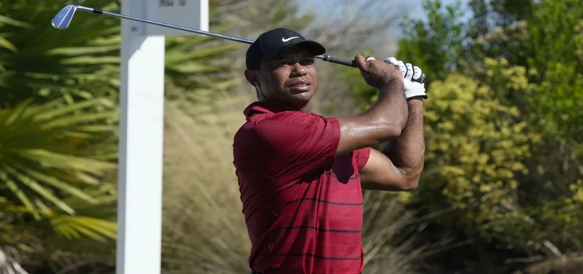
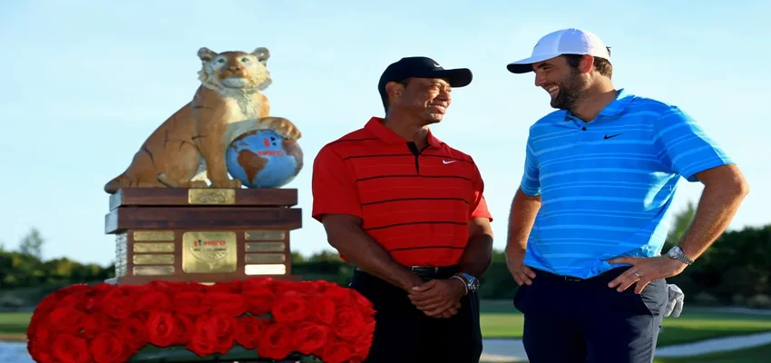

Tiger Woods’ comeback at the Hero World Challenge proves he’s not ready to ‘sail off into the sunset’
Most athletes with an injury list as long and detailed as Tiger Woods would be retired from professional sport. Woods, however, is different to most athletes.
The 15-time major champion’s much-anticipated return to professional golf at the Hero World Challenge in the Bahamas wasn’t perfect, nor was it ever likely to be.
But in his first tournament in nearly eight months, Woods demonstrated that he can still be competitive at a high standard and that his desire to keep playing remains undiminished.
He finished on even par at Albany Golf Club on Sunday, placing 18th out of 20 on the overall leaderboard. His final round featured five birdies – including an excellent long putt on the fifth – as well as some wayward moments: a double bogey on the second hole and three further bogeys on the eighth, 11th and 16th.
All in all, there were some promising signs for the 47-year-old. Woods averaged 305 yards off the tee, proving that his long game is in good health, and he also showed that his beaten and ageing body can still withstand the rigors of four rounds of competitive golf.
“I think I’ve come a long way from being a little bit rusty to playing four days and knocking off a lot of rust, which was great,” Woods told Golf Channel after his final round.
“The physicality of actually playing and competing again – I haven’t done this in a while. It was nice to get out there with the guys and have some fun and compete. I just wish I could have played a little bit cleaner but there’s always next time.”
For Woods, next time will be the PNC Championship, a father-son tournament which tees off in Orlando, Florida on December 14.
It could become a more common sight for the rest of the golfing world next year as one of the game’s greatest players continues to rage against the dying light.